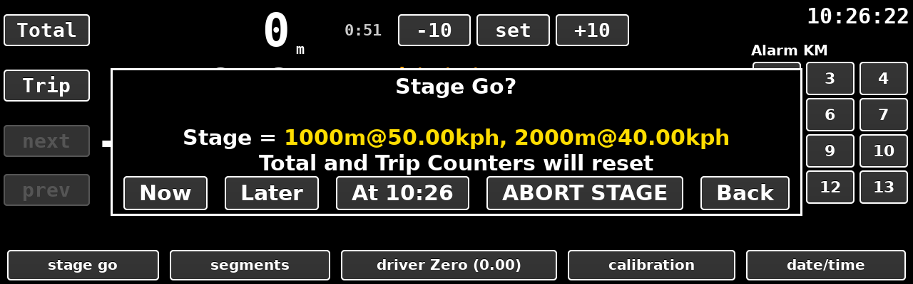

stage go button asks.Stage Go displays the loaded stage details for review and offers three ways to start.
Now starts the stage immediately.At HH:MM sets an autostart at the next round minute and permits
early departure.Later up to 3 hours in the future. Can be set while a stage is
in progress. No early departure.Starts the stage immediately and has the following characteristics:
Advantages: can be used with a flying start if late to a stage, though the difference between the start time and the actual time at the start line will need to be corrected for. Disadvantages: start time accuracy is only as good as the navigator's reactions.
Starts the stage on the next whole minute, which is automatically shown on the button. It has the following characteristics:
Advantages: can make an early departure; simple one button press when lining up for the start; perfect start time. Disadvantages: can only be pressed within 59 seconds of the start.
Starts the stage a predetermined time up to 3 hours in the future, even if a
stage is currently under way. To use it tap the autostart entry box, type the
start time as hh:mm:ss on the keypad, press set to
store; back to return to main screen. Press Clear to
remove the autostart. It has the following characteristics:
Advantages: can be configured while another stage is in progress; can be configured more than 1 minute in advance; can make last minute changes to segment instructions; perfect start time. Disadvantages: no early start; very early reconfiguration means the driver display is obscured by the countdown.
Ends the stage after confirmation. The driver's needle returns to zero and the tone stops. Total and Trip keep their readings, and any autostart that has been set is cancelled.
Closes the question and changes nothing.